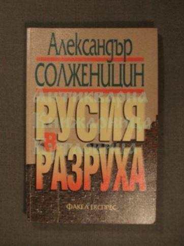
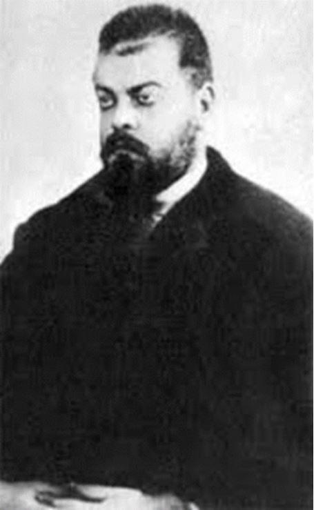
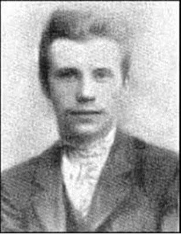
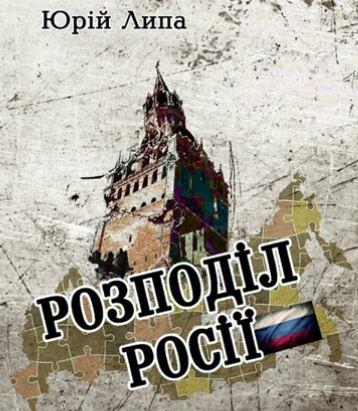

Nationalisme et révolution : le cas ukrainien (2nde partie)
par Lucien CERISE
Bolcheviques, nationalistes et impérialistes, ensemble contre la Russie
En 1998, Alexandre Soljenitsyne publie La Russie sous l’avalanche, œuvre aux accents pamphlétaires et au titre métaphorique du sort de la Russie sous la présidence de Boris Eltsine. Dans ce livre, le plus célèbre des dissidents consacre plusieurs pages au phénomène du « nationalisme ukrainien », en fait un suprémacisme racial anti-russe nourrissant des ambitions de conquêtes territoriales qui recoupent singulièrement certains projets impérialistes et mondialistes. Avant de les commenter, Soljenitsyne rappelle les slogans qui animaient les milieux nationalistes ukrainiens dans les années 1990, peu après l’indépendance du pays :
« ‘L’Ukraine aux Ukrainiens’ – ça oui, aucun doute là-dessus (bien qu’en Ukraine vivent des dizaines de peuples différents), mais aussi : ‘La Rus kiévienne jusqu’à l’Oural !’ Les Russes sont exclus des peuples slaves comme un ‘hybride finno-mongol’. On a créé à Odessa un Institut de géopolitique nationale ; il porte le nom de Youri Lipa, auteur du livre Le Partage de la Russie qui, encore en 1941, développait le programme suivant : ‘On ne peut abattre la Russie que par l’alliance de l’Ukraine avec le Caucase et la Transcaucasie.’ C’est dans cet esprit que les nationalistes ukrainiens ont célébré l’anniversaire de la division SS ‘Galicie’ (ce qui n’a entraîné ni reproches, ni indignation de la part des États-Unis). Au cours d’une de leurs conférences, en 1990 : ‘Nous professons le culte de la force, la force est tout !’ C’est pour cela que l’Assemblée nationale ukrainienne (UNA) s’est dotée de troupes de choc (UNSO) et d’un slogan : ‘L’UNA – au pouvoir, l’UNSO – à l’assaut !’ Au Congrès de 1994 : ‘Soutenir le séparatisme régional en Russie en vue de favoriser sa désintégration !’ (Argoumenty i fakty, 26 juin 1994 – NdA). Et cette position antirusse de l’Ukraine, c’est justement ce qui fait l’affaire des États-Unis. Les autorités ukrainiennes, aussi bien sous Kravtchouk que sous Koutchma, s’empressent de faire chorus aux Américains, lesquels cherchent à affaiblir la Russie. C’est ainsi qu’on en est vite arrivé à des ‘relations privilégiées entre l’Ukraine et l’OTAN’, et aux exercices de la flotte américaine en mer Noire (1997). On ne peut s’empêcher de penser à l’immortel plan de Parvus en 1915 : utiliser le séparatisme ukrainien pour démembrer la Russie. » 1.
Qu’est-ce que cet immortel plan de Parvus, connu aussi comme « mémorandum de Parvus » (Меморандум Парвуса), ou « mémorandum du Docteur Gelfand » (Меморандум доктора Гельфанда), dont nous parle Soljenitsyne ? Mais tout d’abord, qui est Parvus ? Alexandre Parvus (1867-1924), de son vrai nom Israel Lazarevich Gelfand, était un agitateur bolchevique, proche collaborateur de Trotski et inventeur de l’idée de « révolution permanente ». Surnommé le « marchand de révolution » en raison de sa fortune personnelle amassée grâce à son talent financier, Parvus est une sorte de père spirituel de George Soros, dont la vie et l’œuvre peuvent se résumer en une phrase, comme le rappelle Georges Nivat, traducteur français de Soljenitsyne : « L’effondrement de la Russie est la clef de l’histoire universelle. » 2
Afin de réaliser ce grand dessein, Parvus rédige en 1915 un plan pour une révolution en Russie. Il remettra son plan au gouvernement allemand de l’empereur Guillaume II de Hohenzollern, pourtant assez peu porté sur le socialisme, le marxisme ou le communisme, pour le convaincre d’apporter son soutien aux bolcheviques dans la perspective de disloquer le vaste territoire de l’empire tsariste. Une attention particulière est accordée à l’Ukraine et aux pourtours de la mer Noire 3 :
« En parallèle avec la préparation de la création d’une base organisationnelle pour une grève de masse, il est nécessaire de commencer immédiatement l’agitation directe. Grâce à la Bulgarie et la Roumanie, vous pouvez établir des liens avec Odessa, Nikolayev, Sébastopol, Rostov-sur-le-Don, Batou et Bakou. (…) La formation d’une Ukraine indépendante peut être considérée à la fois comme une libération du régime tsariste et comme une solution à la question paysanne. (…) La croissance du mouvement révolutionnaire dans l’empire tsariste, entre autres choses, conduira à la confusion générale. En plus du cours général des opérations militaires, des mesures spéciales peuvent être prises pour renforcer cette situation troublée. Pour certaines raisons, le bassin de la mer Noire et le Caucase sont plus favorables à cette zone. Une attention particulière devrait être accordée à la ville de Nikolayev, car deux très gros navires de guerre se préparent à la descente dans une situation très tendue. À Nikolayev, il est nécessaire de déclencher une grève parmi les travailleurs, pas nécessairement de nature politique, mais simplement sur la base de revendications économiques. »
L’État prussien du Kaiser Guillaume II, conservateur et antibolchevique, a ainsi coopéré en toute conscience avec le révolutionnaire bolchevique Alexandre Parvus dans le soutien au nationalisme ukrainien pour attaquer la Russie. Dans son ouvrage monumental sur la révolution bolchevique, l’historien Richard Pipes, spécialiste du monde russe et consultant néo-conservateur à la CIA, notait que le principal intermédiaire de tout ce petit monde était Parvus, « (…) l’un des leaders du Soviet de Saint-Pétersburg en 1905, le fondateur de la théorie de la ‘révolution permanente’, et plus récemment un collaborateur de l’Union pour la Libération de l’Ukraine » 4. Cette Union pour la libération de l’Ukraine (ULU), fondée en 1914 par Dmytro Dontsov et quelques amis, servira de prototype à l’OUN-B de Stepan Bandera et à sa branche armée de l’UPA. Les contacts entre bolcheviques et nationalistes ukrainiens, le tout sous pilotage impérialiste occidental, sont documentés également par l’historien spécialiste du renseignement, le lieutenant-colonel Olivier Lahaie, dans son ouvrage sur le rôle de la Suisse comme plaque-tournante des services secrets européens pendant la Première guerre mondiale 5 :
« Fin 1914, le journaliste d’extrême gauche Alexandre Israël Helphand (alias Parvus) avait fait savoir à Berlin qu’il pensait que l’explosion de l’Empire russe, puis son démembrement, permettraient d’abattre définitivement l’absolutisme tsariste et qu’il fallait donc soutenir le mouvement des nationalités ; une fois la liberté acquise, le socialisme triompherait. Mise au courant de ses propos, l’’Union pour la libération de l’Ukraine’, implantée à Vienne, avait été à la rencontre de Parvus pour quémander son aide ; ce fut ensuite le tour des nationalistes arméniens et géorgiens. »
Dans les archives du service d’Histoire de la Défense à Vincennes données en référence par Olivier Lahaie, on voit se déployer au tournant des années 1920 une nébuleuse d’agents doubles ou triples sillonnant l’Europe et la Turquie, et dont émerge la figure de Wladimir Stepankowsky, rédacteur en chef du journal L’Ukraine et attaché au Bureau ukrainien de Lausanne, sorte d’ambassade d’Ukraine en Europe de l’Ouest, affairée à la propagande anti-russe. Au milieu d’une somme d’informations anecdotiques et contradictoires, les renseignements français de l’époque nous apprennent néanmoins dans les feuilles 65 et 66 de la boîte 2510 du « fonds de Moscou » les raisons d’une rencontre de Stepankowsky avec des agitateurs turcs :
« Une réunion a eu lieu dans le courant de cette semaine entre Stepankowsky, Directeur du bureau de l’Ukraine, actuellement agent anglais, qui revenait d’Allemagne, et les Nationalistes turcs Haroun, Président du bureau permanent du Congrès turc et Seid Ahmed, ex-Président du parlement tartare de Crimée. (…) Les chefs ukrainiens se trouvant en Allemagne et en Galicie, entre autres [le Général] Skoropadsky, se consulteraient actuellement pour créer un grand mouvement en Ukraine, mouvement tendant à détacher ce pays de la Russie. La mission de Stepankowsky consisterait à renseigner les Anglais, hostiles à un relèvement de la Russie, sur les mouvements séparatistes se produisant en Ukraine et en Crimée. Il s’entendrait également sur ce point avec Seid Ahmed qui, de son côté, désire la reconnaissance de l’indépendance entière de la Crimée et une alliance avec les Turcs. Quant à Haroun, son rôle serait de renseigner Angora sur les intrigues concernant la Russie, les Nationalistes étant, eux aussi, hostiles à un relèvement de la Russie et portés à encourager les Tartares à s’organiser en vue de leur indépendance pour former ainsi, avec la Turquie, l’Azerbeidjian et les autres peuples tartares et turcs du Sud de la Russie, une vaste Confédération pan-turque. » 6
La politique et la géopolitique ne connaissent fondamentalement pas d’autres valeurs que l’opportunisme et les alliances tactiques d’occasion. Toutes les combinaisons sont possibles sur la base du repérage de l’ennemi prioritaire et de l’ennemi secondaire, qui peut servir d’allié, et même devenir un ami. Les grandes théories et les systèmes d’idées n’ont guère d’importance et c’est le potentiel d’action physique et matérielle qui sert de fil conducteur organisateur. En 2010, l’universitaire Serhii Hrabovsky, chercheur en philosophie politique à l’Académie nationale des sciences d’Ukraine, commentait dans un article le plan de Parvus et l’alliance apparemment contre-nature nouée autour de lui entre des internationalistes, des nationalistes et des impérialistes pour faire tomber la Russie 7 :
« Le 15 janvier 1915, l’ambassadeur d’Allemagne à Istanbul a envoyé un rapport à Berlin, relatant sa rencontre avec un sujet russe Aleksander Gelfand (alias Parvus), un participant actif de la révolution de 1905-07 et propriétaire d’une grande société de commerce. Parvus a informé l’ambassadeur allemand du plan de la révolution russe. Il a été immédiatement invité à Berlin où il a rencontré des membres influents du cabinet et des conseillers du chancelier Bethmann-Hollweg. Parvus a suggéré que les Allemands lui donnent une grosse somme d’argent pour aider à promouvoir, premièrement, les mouvements nationaux en Finlande et en Ukraine et deuxièmement, soutenir les bolcheviques, qui ont propagé l’idée de la défaite de l’empire russe dans la guerre injuste [débutée en 1914] pour renverser le ‘régime des propriétaires terriens et des capitalistes’. Les suggestions de Parvus furent acceptées ; sur ordre personnel du Kaiser Wilhelm, il reçut deux millions de marks allemands comme première contribution à ‘la cause de la révolution russe’. Plus tard, d’autres versements suivirent, certains pour de plus grands montants. Ainsi, selon un récépissé de Parvus, le 29 janvier 1915, il reçut 15 millions de coupures russes pour le développement du mouvement révolutionnaire en Russie. L’argent a été alloué avec l’efficacité allemande typique. »
Les bolcheviques et les Allemands n’étaient pas les seuls à nourrir ce genre de projet. Depuis au moins le XIXème siècle, ce sont toutes les puissances capitalistes occidentales, emmenées par les puissances anglo-américaines, qui ne rêvent que d’une chose, conquérir la Russie, car c’est le passage obligé de la domination mondiale. Cette motivation suprémaciste avance généralement masquée derrière des revendications aux apparences généreuses : indépendance nationale et/ou justice sociale. Le stratagème est bien rodé et repose sur le principe du prétexte. De même que les féministes revendiquent une égalité homme/femme déjà acquise pour faire passer la guerre des sexes, les nationalistes ukrainiens participent en 2014 à une révolution pour une indépendance déjà donnée par le Kremlin en 1991, et mettent ainsi fin à l’indépendance de leur pays pour le placer sous une occupation étrangère visant la Russie. L’alliance pour s’emparer de Moscou, et plus largement pour s’accaparer tout le continent eurasiatique, ratisse de l’extrême-gauche à l’extrême-droite, le tout sous pilotage anglo-américain, et vise toujours le morcellement et le partage du territoire de la Russie ou de l’URSS, comme on se partage un butin.
Ce concept de « partage » de la Russie a été particulièrement travaillé par un certain Youri Lipa (1900-1944), intellectuel ukrainien mentionné par Soljenitsyne dans son ouvrage déjà cité. En juillet 2014, un site internet bandériste rendait hommage à Youri Lipa en évoquant cette grande stratégie étalée sur des décennies pour tenter de conquérir enfin les vastes territoires russes 7 :
« Le concept de ‘partage’ a été développé par l’historiographe ukrainien et culturologue Youri Lipa dans son livre du même nom en 1941. Oleg Bagan [historien du nationalisme ukrainien] a déclaré : ‘Dans le livre Le partage de la Russie [Розподіл Росії], Lipa prouve que l’Ukraine est un facteur décisif pour l’effondrement de l’empire russe comme monstre artificiel, oppressif et antinational de la politique internationale’. La principale conclusion du livre, selon Bagan, est la suivante : ‘La Russie cessera d’être un fardeau et une menace pour ses voisins lorsqu’elle se concentrera sur le développement de la nation russe sur ses territoires ethniques jusqu’à l’abandon de sa politique impériale’. »
Pour les nationalistes ukrainiens, la Russie doit donc abandonner sa politique impériale, mais elle doit surtout accepter de céder des morceaux de son territoire. En effet, par « partage », il faut entendre « répartition », à la suite d’un découpage de l’empire russe au moyen d’un soutien aux séparatismes révolutionnaires ethniques et nationaux. Cette stratégie d’ensemble des forces atlantistes sera baptisée « prométhéisme » par le grand homme d’État polonais Józef Piłsudski, fondateur de la Deuxième république de Pologne en 1918, puis sera appliquée au fil du temps par des acteurs politiques divers tels que Gerhard Von Mende, ministre de Hitler et spécialiste de l’agitation des musulmans d’URSS, ainsi que les bolcheviques déjà cités, Parvus et Trotski, mais aussi Lénine. En 2016, à l’occasion d’une réunion publique, Vladimir Poutine accusait explicitement ce dernier d’avoir travaillé contre les intérêts du pays 8 :
« [Poutine] a dénoncé Lénine et son gouvernement pour avoir exécuté brutalement le dernier tsar de Russie avec toute sa famille et ses serviteurs, tuant des milliers de prêtres et plaçant une bombe à retardement sous le régime russe en traçant des frontières administratives selon des critères ethniques. (…) Il a ajouté que le gouvernement de Lénine avait dessiné des frontières fantaisistes entre certaines parties de l’URSS, plaçant le Donbass sous la juridiction ukrainienne afin d’augmenter le pourcentage de prolétariat dans un mouvement qu’il a appelé ‘délirant’. (…) Poutine a particulièrement critiqué le concept de Lénine d’un État fédératif composé d’entités ayant le droit de faire sécession, affirmant qu’il a fortement contribué à l’éclatement de l’Union soviétique en 1991. Il a ajouté que Lénine avait tort dans sa dispute avec Staline, lequel prônait un modèle d’État unitaire. Poutine a dénoncé par le passé Staline pour les purges qui ont tué des millions de personnes, mais a noté son rôle dans la défaite des nazis pendant la Deuxième guerre mondiale. Dans les commentaires de lundi, Poutine a également critiqué les bolcheviques pour avoir provoqué la défaite de la Russie devant l’Allemagne lors de la Première guerre mondiale et avoir cédé de larges portions de territoire quelques mois avant de perdre. ‘Nous avons perdu face à la partie perdante, un cas unique dans l’histoire’, a déclaré Poutine. »
Sous la direction de Staline à partir de 1922, l’URSS parviendra à conserver son unité et à empêcher le processus « prométhéiste » de fragmentation lancé par la révolution bolchevique avec le parrainage de Londres, Berlin et Varsovie. Les ennemis de Moscou se sont donc remis au travail encore une fois, ce qui aboutira à l’opération Barbarossa déclenchée par Hitler en 1941 pour envahir l’URSS de l’extérieur, et qui échouera également. Après 1945, cette stratégie de prise en tenaille de l’URSS – éclatement de l’intérieur, encerclement et agression de l’extérieur – sera poursuivie par diverses ONG, telles que la Ligue prométhéenne, la Ligue anti-communiste mondiale (World Anti-Communist League, WACL), la fondation Open Society de George Soros, de concert avec les services d’action clandestine et les réseaux terroristes spécialisés dans la déstabilisation de l’Eurasie, gérés en Ukraine et dans le monde musulman par des individus comme le sénateur américain John McCain ou le géopolitologue polonais Zbigniew Brzeziński.
L’empire anglo-américain ne tolère aucune concurrence. Sa confrontation permanente avec cet autre empire qu’est la Russie porte un nom en géopolitique, le Grand Jeu, car tout se résume à cette ligne de front, de près ou de loin, depuis au moins le XIXème siècle. Et dans cette confrontation, les nationalistes ukrainiens ont pris parti pour l’empire anglo-américain contre l’empire russe. Le terme de « nationalistes » pour les désigner est un abus de langage. Techniquement, ce sont des supplétifs d’un empire contre un autre, donc des impérialistes. La Russie est ainsi la cible d’acteurs géopolitiques divers qui peuvent donner l’impression de s’opposer mais qui convergent sur le fond et qui sont surtout hiérarchisés. Au sommet de la pyramide, les puissances impérialistes occidentales, qui amènent l’argent depuis les centres financiers anglo-américains et allemands pour l’essentiel. Juste en dessous, les leaders charismatiques de toutes tendances politiques, profils d’aventuriers et de révolutionnaires (Parvus, Dontsov, Bandera) qui savent parfaitement d’où vient l’argent et à qui ils doivent leur carrière, mais que cela ne dérange pas car ils ont soif d’action. Tout en bas, les militants sincères, qui croient en leur cause et sont utilisés à leur insu par les sponsors financiers comme forces de procuration, puis éliminés à la fin. Le nationalisme ukrainien tel que Dmytro Dontsov l’a inventé s’inscrit dans ce dispositif anti-russe hiérarchisé et a perdu au fil du temps toute autre finalité positive. À cause de son romantisme revendiqué, cultivant l’irrationnel et l’impulsivité, ce nationalisme était de toute façon destiné à rester un phénomène esthétique, trop instable pour fournir un ferment civilisationnel sur le long terme, et il est devenu au cours du XXème siècle un simple outil de radicalisation et de militarisation des foules au moyen de déclencheurs émotionnels et comportementaux régressifs. Nous verrons dans une partie ultérieure comment ce travail de conditionnement des masses s’appuie dans l’Ukraine post-Maïdan sur un recours à l’occultisme.
L.C.
Texte de son intervention de à la conférence « Mai 68-2018, 50 ans de révolutions colorées », organisée le 24 novembre 2018 à Nice par l’association Culture Populaire, avec Jean-Michel Vernochet et Pierre-Antoine Plaquevent.
NOTES
1. Georges Nivat, « Soljenitsyne, d’octobre à février 1917 », dans Le Débat n°196 (septembre-octobre 2016).
2. Александр Парвус, « План русской революции », ХРОНОС (Chronos) : « Одновременно с подготовкой создания организационной базы для массовой забастовки необходимо немедленно начать проводить непосредственную агитацию. Через Болгарию и Румынию можно установить связи с Одессой, Николаевом, Севастополем, Ростовом-на-Дону, Батумом и Баку. (…) Образование независимой Украины можно рассматривать и как освобождение от царского режима, и как решение крестьянского вопроса. (…) Рост революционного движения в царской империи, кроме всего прочего, приведет ко всеобщей смуте. Помимо общего хода военных действий, можно принять особые меры для усиления этой беспокойной ситуации. По определенным причинам бассейн Черного моря и Кавказ являются более благоприятными для этого районами. Особое внимание следует обратить на город Николаев, так как там в очень напряженной обстановке готовятся к спуску два больших военных корабля. В Николаеве нужно начать забастовку среди рабочих, не обязательно политического характера, а просто на основе экономических требований. »
3. Richard Pipes, The Russian Revolution, Random House, 1990, p. 380.
4. Olivier Lahaie, La Guerre secrète en Suisse (1914-1918), Éditions Connaissances et savoirs, 2017, pp. 147-148.
5. Service historique de la Défense, « Renseignements sur Stepankovsky, agent allemand en Suisse, et sur le ‘Bureau ukrainien’ de Lausanne », dossier n°11, cote : GR 7 NN 2510, fiche n°5.399/2 du 19/11/1921, 2ème bureau de l’état-major de l’armée de terre (EMA 2), section de centralisation du renseignement (SCR).
6. « Lenin. Money. Revolution – The shady side of the Bolshevik activities », День.ua, 22/04/10.
7. « La ‘Distribution de la Russie’ comme alternative à l’utopie de l’Eurasianisme », Ukrainian Crusade, 18/07/14.
8. « Vladimir Poutine accuse Lénine d’avoir placé une ‘bombe à retardement’ sous la Russie ». The Guardian, 25/01/16.
Partager cette page